The complete guide to Starplast
Every feature, in the order you meet them, with captures from the running application. The five tutorials walk through specific tasks; this page is the reference to come back to.
- The window at a glance
- Finding genes and reading the evidence
- Coloring, views and edges
- The analysis panel, tab by tab
- The gallery, kept runs and annotations
- Guided workflows (Tools menu)
- Your own data
- The Strategies tab
- Two organisms
- Preferences, console, jobs and the assistant
- The Python API
- Reading the numbers honestly
1. The window at a glance
Starplast places every gene of Toxoplasma gondii (or Plasmodium falciparum) as a point in a three-dimensional map built from what the gene does -- expression across stages, fitness in many conditions, localization, modification, structure -- so that nearness means similar behaviour, not an arbitrary layout. Around the map sit the find and color by controls (left), the evidence panel for the selected gene, and, tabbed with it on the right, analysis and strategies. Console, jobs and assistant sit along the bottom and can be shown from the Tools menu.

Three rules hold everywhere and are worth knowing before anything else:
- Gray means unknown -- never zero, never a category. A gene with no measurement is not a gene that measured nothing.
- Measurement, inference, absence and annotation never read as one another. An inferred label is drawn and stored apart from a measured one.
- No candidate without the number that says how much to believe it. Every search reports its chance level; every strategy carries a self-test.
2. Finding genes and reading the evidence
Type an accession, a gene symbol or words from the product description in find; the gene is selected, its edges drawn and its evidence opened. The evidence panel lists every measurement with where it came from; a dash is 'not measured'. Its header says how much the gene has been written about -- listed, not studied means named in papers only as an entry in a screen's table. Tools > Explore a gene opens the same search as a guided workflow with links to each source record.

3. Coloring, views and edges
Color by chooses what color means: any label column, any kept clustering, or a numeric column cut into bins. The list below it filters: untick a category to hide it. View sets point size, what the left mouse button does (navigate, or draw a gate in 2D or a brush in 3D), rotation locked to an axis so two views can be compared, and a continuous spin -- depth in a 3D scatter reads only when it moves. The Edges menu turns each measured network on and off: co-mention in abstracts and full texts, shared orthogroup, co-expression, shared compartment, co-fitness, shared domain, crosslinks, pulldowns, structural similarity, and two derived layers. They are never merged into one graph, because each answers a different question; attention-corrected co-mention (on by default) shows co-mention beyond what each gene's fame predicts.

4. The analysis panel, tab by tab
The analysis panel is the laboratory: choose the data, build and tune a map, cluster it, ask what the clusters mean using only features the map never saw, search the space of maps for one that recovers a held-out label, put an error rate on an annotation by hiding labels you already have, search for structure worth reading, and ask named biological questions. It is arranged top to bottom in the order the work is done. Every control's explanation below is the tooltip the application itself shows.
1 · Data
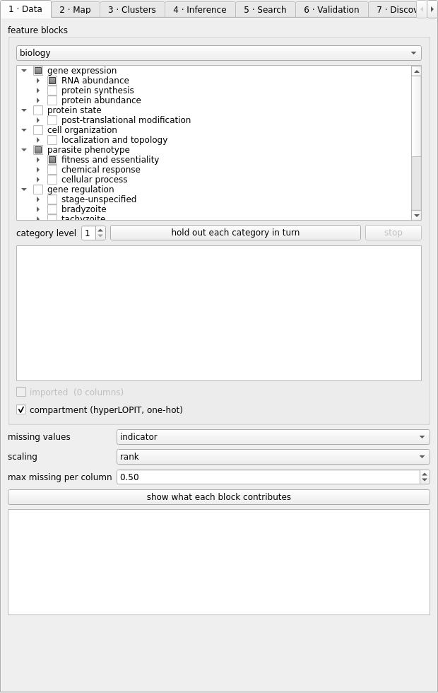
| control | why it exists |
|---|---|
| missing values | indicator adds a 0/1 column recording that a value was missing. drop_genes keeps only genes with no missing value at all -- on this table that is 3 of 8,140, so it is offered rather than recommended. |
| scaling | rank is the safe default: the published screens carry inverted sign conventions, ~64x differences in spread and heavy tails that z-scoring does not tame. |
| max missing per column | Drop a column missing in more than this fraction of genes. Most of this proteome is unmeasured, so a permissive setting fills the map with columns that are mostly absence indicators rather than measurements. Range 0 to 1. 0 keeps only columns with no missing value at all; 1 keeps every column however empty. Most of this proteome is unmeasured, so the top of this range fills the map with absence indicators. |
| hold out each category in turn | Runs the whole argument automatically. One map per category, each built WITHOUT that category, then scored on whether the category comes back. Only the ticked blocks take part, so this sweeps what you have selected rather than the entire catalogue. Stoppable, and a stopped sweep keeps what it finished. |
| stop | Stop the running analysis after the configuration it is on. Everything already computed is kept: the rows are in the table, each embedding is in the store, and both have been written to disk as they were produced. |
| show what each block contributes | Report how much of the feature matrix each block actually contributes. The check that catches a block being named as an input while carrying almost nothing -- hyperLOPIT came to 1.1%. |
2 · Map
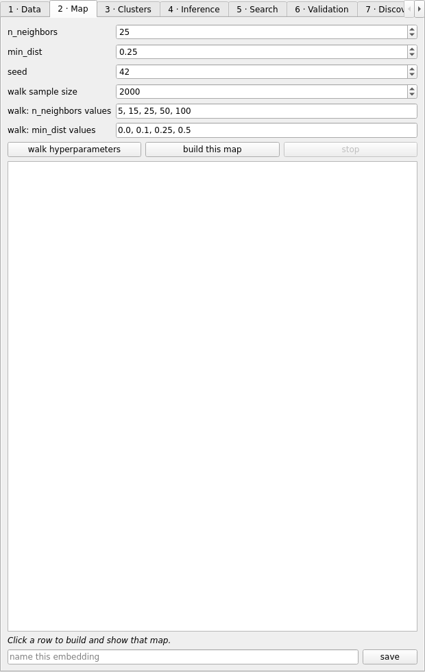
| control | why it exists |
|---|---|
| n_neighbors | UMAP n_neighbors: how much of the neighborhood each point is placed by. Small values preserve local detail and fragment the map; large values preserve global shape and merge genuinely distinct groups. This is the single most consequential hyperparameter here. Range 2 to 400. Below 2 there is no neighborhood to embed from. The upper bound is well past useful: at 400 neighbours on 8,140 genes the map is nearly global structure only. |
| min_dist | UMAP min_dist: how tightly points may pack. Low values make dense, visually separated clumps that look like clusters whether or not they are; higher values spread points and make the density gradient honest. Low min_dist flatters every clustering that follows. Range 0 to 1. 0 packs points as tightly as the layout allows; 1 spreads them as far as it can. Both extremes are legal and both are misleading, for opposite reasons. |
| seed | Random seed. Recorded with every stored embedding, because a structure nobody can rebuild is not a result -- and UMAP moves noticeably between seeds at these sizes. Range 0 to 1e+06. Any integer. It changes the answer, which is why it is recorded with every stored embedding. |
| walk sample size | How many genes the hyperparameter walk uses per configuration. Smaller is faster and FLATTERING: measured on this data, a 3,000-gene subsample scored compartment at 0.228 where the full proteome scored 0.193. Confirm any winner at full size. Range 200 to 20000. Below about 200 genes a UMAP is noise. The ceiling is the whole proteome, and the whole proteome is what a published number should be computed on. |
| walk: n_neighbors values | The n_neighbors values the WALK sweeps, as opposed to the single value above, which only affects 'build this map'. Comma- separated (5, 15, 25) or a range (5:100:5). Every extra value multiplies the length of the walk. |
| walk: min_dist values | The min_dist values the WALK sweeps. Comma-separated or min:max:step. Low values make dense clumps that look like clusters whether or not they are, so a grid that only samples low min_dist will flatter every clustering that follows. |
| walk hyperparameters | Score a grid of UMAP hyperparameters and rank them. Each configuration appears in this table and as a thumbnail in the gallery the moment it is computed, so a long sweep can be read while it runs; click either to open that map. |
| build this map | Build ONE embedding from the current settings and show it in the 3D view, replacing what is there. |
| stop | Stop the running analysis after the configuration it is on. Everything already computed is kept: the rows are in the table, each embedding is in the store, and both have been written to disk as they were produced. |
| save | Store this embedding with its full recipe, so it can be reloaded and compared rather than rebuilt from memory of what the settings were. |
3 · Clusters
| control | why it exists |
|---|---|
| algorithm | HDBSCAN finds clusters of varying density and labels the rest noise, which suits a proteome where most genes belong to no tight group. DBSCAN needs one density for everything, so it either splits the sparse regions or merges the dense ones. |
| min_cluster_size / min_samples | The smallest group that counts as a cluster. This is the guard against the degenerate answer: any purity objective is won outright by shattering the map into singletons, because a cluster of one is perfectly pure. Raise it if clusters look suspiciously tidy. Range 3 to 2000. Below 3 a 'cluster' is a pair. The floor is what stops the degenerate answer, since any purity score is won outright by singletons. |
| eps (dbscan) | DBSCAN neighborhood radius, in embedding units. Ignored by HDBSCAN, which infers the equivalent per cluster instead of taking one value for the whole map. Range 0.001 to 50. In embedding units, so the useful value depends entirely on min_dist and the scale of the coordinates. Ignored by HDBSCAN. |
| walk clustering | Score a grid of clustering hyperparameters against the current map. |
| cluster this map | Cluster the current map with these settings. Needs a map built first: this clusters an embedding, it does not make one. |
| stop | Stop the running analysis after the configuration it is on. Everything already computed is kept: the rows are in the table, each embedding is in the store, and both have been written to disk as they were produced. |
4 · Inference
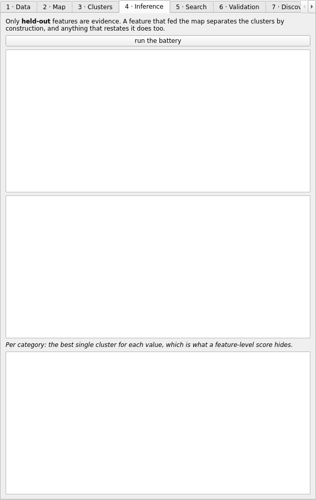
| control | why it exists |
|---|---|
| run the battery | Test what the clusters correspond to, using ONLY features the map was not built from. A feature that fed the map separates the clusters by construction, so it is evidence of nothing. |
5 · Search
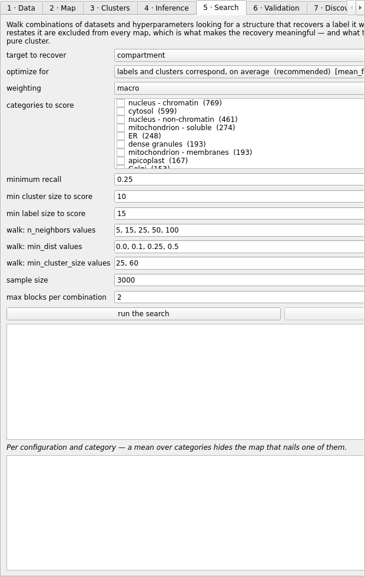
| control | why it exists |
|---|---|
| target to recover | The label to hold out and try to recover. It is excluded from the features along with anything that substantially restates it, so the map cannot see the answer it is being scored on -- which is the whole point of the exercise. |
| optimize for | What counts as good structure. Precision asks of a CLUSTER what fraction of its members share a label; recall asks of a LABEL what fraction of its genes share a cluster. Every one of these has a degenerate solution that wins it outright -- purity by shattering into singletons, recall by one giant cluster -- so read the coverage and cluster count beside the score. Help has the full table. |
| weighting | macro weights every label equally; size weights every gene equally. On this proteome nucleus-chromatin has 769 genes and dense granules 167, so size weighting means a search for dense granules is decided by the nucleus. macro is the default for that. |
| categories to score | Which categories to score. Tick none for all of them; tick one or several to optimize for exactly those. Drag across several rows and right-click to tick them together, or click a single row's box; space toggles what is selected. Ticks rather than selection, because assembling four categories used to mean four ctrl-clicks that one ordinary click threw away. The objective and the label set are independent, so 'precision for dense granules' and 'recall for dense granules and rhoptries' are both reachable. With several, mean objectives average over them and best objectives take the best among them. |
| minimum recall | Used only by precision_at_recall: the least of a label a cluster must hold to count. Precision alone selects three co-located genes at 1.00 and gives you nothing to annotate from, so this is the floor that makes the answer usable. Range 0 to 1. 0 accepts any cluster however small, which is the failure this floor exists to prevent. 1 demands a cluster holding the entire label. |
| min cluster size to score | The smallest cluster allowed to COUNT when scoring. Distinct from HDBSCAN's min_cluster_size above, which decides what gets formed in the first place. This is the guard against the singleton exploit: any purity objective is won outright by a cluster of one, so nothing below this is scored at all. Range 1 to 2000. Below 1 there is no cluster. The ceiling is arbitrary; what matters is that this is a floor, and raising it is how you stop tiny clusters winning a purity score. |
| min label size to score | The smallest label allowed to COUNT. A category with five genes can be captured perfectly by accident, and scoring it rewards luck. Raising this drops rare compartments from the score entirely, so it trades noise for coverage. Range 2 to 2000. Two is the least that can be a class. Raising it drops rare categories from the score entirely, which is a trade rather than an improvement. |
| walk: n_neighbors values | The n_neighbors values the search sweeps. Mirrors the Map tab. |
| walk: min_dist values | The min_dist values the search sweeps. Mirrors the Map tab. |
| walk: min_cluster_size values | The min_cluster_size values the SEARCH sweeps when clustering each embedding. This is the guard against the degenerate answer, so sweeping it low is sweeping toward solutions that win on purity by shattering into singletons. |
| sample size | Genes per configuration in the search. Same caveat as the walk sample: smaller subsamples produce tighter, purer clusters and therefore better scores than the full proteome will reproduce. Range 500 to 20000. Same range as the walk, same caveat: small subsamples score better than the full proteome will reproduce. |
| max blocks per combination | How many feature blocks may be combined in one configuration. The number of combinations grows fast, so this bounds a walk that would otherwise run for hours -- the count of configurations is reported when the search starts. Range 1 to 4. One block per configuration up to four. Combinations grow factorially, so four is already thousands of runs. |
| run the search | Walk dataset combinations and hyperparameters, scoring each by how well the structure recovers the held-out label. This is the long one -- hundreds of configurations, minutes to hours. It appears in Jobs and can be stopped there. |
| stop | Stop the running analysis after the configuration it is on. Everything already computed is kept: the rows are in the table, each embedding is in the store, and both have been written to disk as they were produced. |
6 · Validation
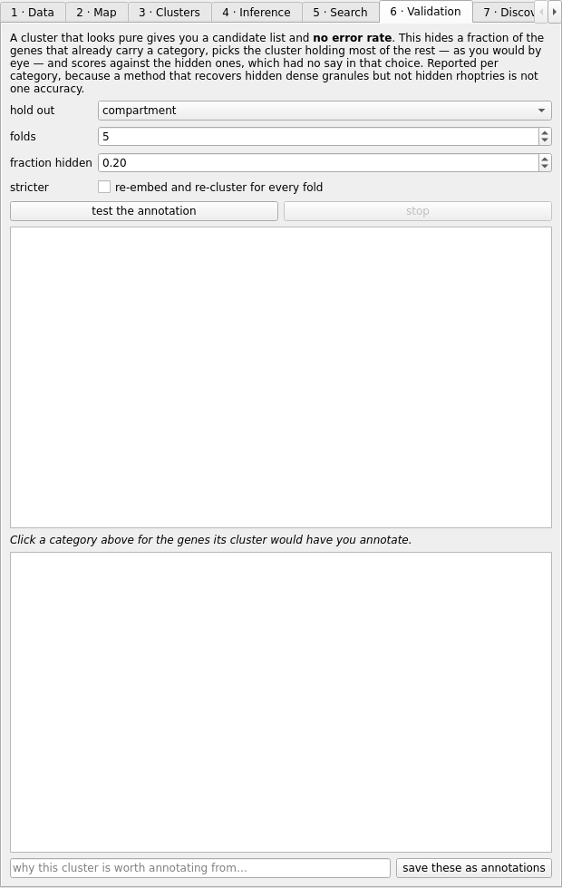
| control | why it exists |
|---|---|
| hold out | The label to hide and try to recover. It must NOT be among the features the map was built from: a cluster matching something the embedding already saw is circular, and this refuses to score it rather than returning a flattering number. |
| folds | How many times to repeat the hide-and-recover test with a different random selection. More folds give a steadier estimate; the spread across folds is what tells you whether a single good result was luck. Range 2 to 20. Two folds is the least that gives a spread; twenty is well past the point where the estimate stops moving. |
| fraction hidden | Fraction of each category's labeled genes hidden per fold. These are the genes the score is computed on, and they take no part in choosing which cluster to annotate from -- otherwise the test would be marking its own homework. Range 0.05 to 0.5. Hide too little and the estimate is noisy; hide more than half and the visible members no longer pick the cluster a user would pick. |
| stricter | Build a fresh map and clustering for every fold, with a different seed. The label never feeds the embedding either way, so what this buys is that the answer stops being a fact about one particular layout -- UMAP moves noticeably between seeds at this size. It costs a full embedding per fold per category, so it is off by default, and every row records which way it was obtained. |
| test the annotation | Put an error rate on an annotation. Hides some genes that already carry a category, picks the cluster holding most of the rest, and scores against the hidden ones. A candidate list without this number is a list of guesses. |
| stop | Stop the running analysis after the configuration it is on. Everything already computed is kept: the rows are in the table, each embedding is in the store, and both have been written to disk as they were produced. |
| save these as annotations | Write the candidates above to the annotations file, each carrying the validated precision and recall for its category, the cluster's composition and the configuration. Refused outright when there is no validated precision, or when it is below 10% -- that is not an annotation, it is a coin toss with a record attached. Never written into the node table: measurement and inference do not share a file. |
7 · Discover
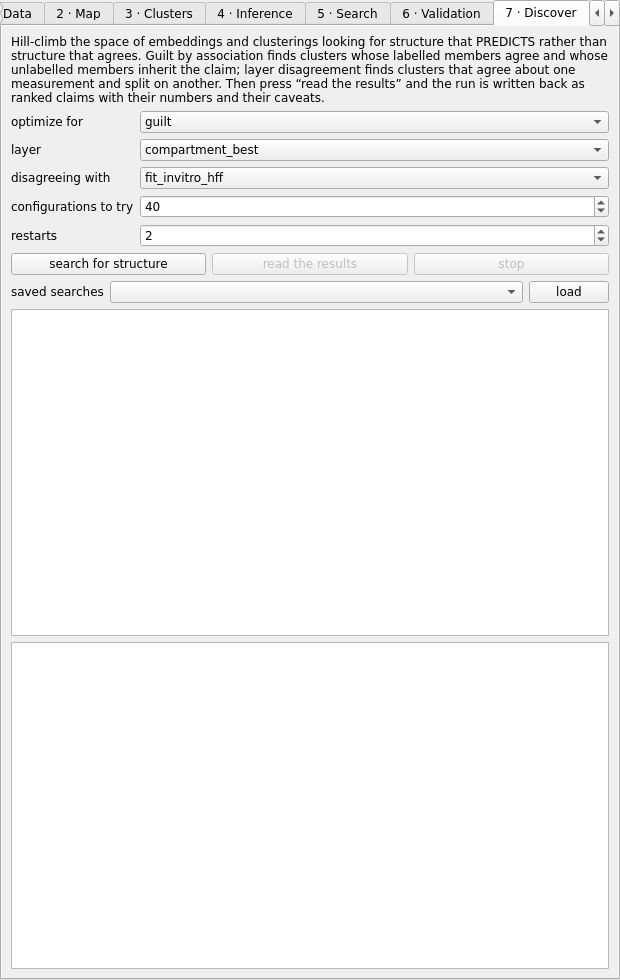
| control | why it exists |
|---|---|
| optimize for | What the climb maximises. guilt -- how much the map predicts about genes nobody has measured. disagreement -- how many categories one layer splits along another. both -- the sum, for “find me anything”. recovery -- the old objective: how well a held-out label comes back. Measures trust rather than yield, and a map tuned until it recovers a label perfectly has often found nothing new. auprc / auroc -- how good a shortlist the map gives per category, as a ranking rather than a partition. Unlike the partition scores these cannot be won by merging everything into one cluster. AUPRC is reported as lift over prevalence, because a raw AUPRC is uninterpretable without knowing how common the class is. knn -- scores the EMBEDDING alone, with no clustering in it. Optimise this first when the clustering is the thing that keeps going wrong. |
| layer | The layer a claim is about. A category (localisation, cell-cycle phase) produces enrichment claims about the genes in a cluster that carry no label; a quantity (fitness, abundance) produces claims about the genes nobody measured. |
| disagreeing with | The second layer, for disagreement: the one a cluster is allowed to disagree about while agreeing about the first. Same compartment, opposite fitness. |
| configurations to try | How many configurations the climb may evaluate. Each one is an embedding and a clustering, so this is the run’s cost in minutes as much as its thoroughness. Embeddings are cached across steps that change only the clustering, which is most of them, so the true cost is far below the count. |
| restarts | A hill climber finds the top of whatever hill it started on. Restarts are the cheapest defence against reporting a local optimum as the answer. |
| search for structure | Start the climb. It steps one coordinate at a time -- one hyperparameter, or one dataset added or removed -- keeps the step when the score improves, and restarts elsewhere when it can no longer improve. Every configuration appears in the table as it finishes, with its score and every other metric alongside, so a run optimised for one thing can be re-read against another afterwards. Stopping keeps everything already evaluated. |
| read the results | Rank what the winning configuration found and write it out as claims: which clusters matter, what they say, which genes they are about, and what is wrong with each one. Ranked by strength x reach x novelty -- a statistically overwhelming claim about two well-published genes is not the finding to read first. |
| stop | Stop the running analysis after the configuration it is on. Everything already computed is kept: the rows are in the table, each embedding is in the store, and both have been written to disk as they were produced. |
| load | Put this saved search back on screen, with everything it found. |
8 · Questions
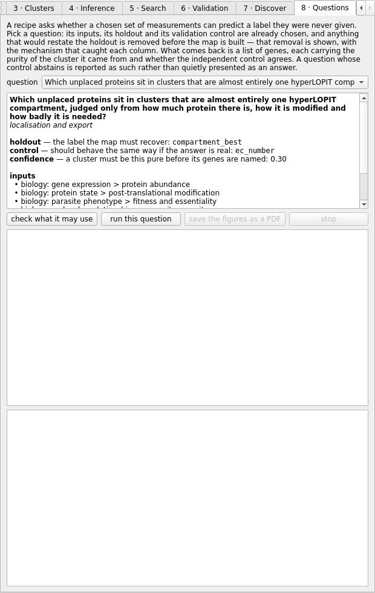
| control | why it exists |
|---|---|
| question | The questions this data can be asked, each one checked against the real table before it was shipped. One is kept deliberately BECAUSE it is refused: a library where every question works is a library that has been fitted to its answers. |
| check what it may use | Run leakage closure and stop. Cheap, because nothing is built: it reports which columns were removed from the inputs this question names, and which of the five mechanisms caught each one. A question that restates its own holdout is refused here, before any compute is spent on it. |
| run this question | Build the map from what survived closure, tune it, cluster it, and name the unlabelled genes in clusters that are mostly one holdout label. The validation control is scored on the SAME clusters and its verdict appears on the same rows as the genes it qualifies. |
| save the figures as a PDF | Write this run as a document meant for a paper: one page per map, its UMAP and clustering settings, the map coloured by cluster, by the holdout and by the control, and the quality of each. Vector output, and the cover page carries the question, what leakage closure removed, and the seed — so a reader can trace any figure back to a run that can be rebuilt. |
| stop | Stop the running analysis after the configuration it is on. Everything already computed is kept: the rows are in the table, each embedding is in the store, and both have been written to disk as they were produced. |
5. The gallery, kept runs and annotations
A hyperparameter walk streams a thumbnail per map into the gallery along the bottom; click one to show that map in the central view with everything the view can do. Every clustering you make is kept as a run under a timestamp, so 'does this structure survive other settings?' can be answered by looking. Annotations -- proposing a label for the unlabelled members of a cluster -- refuse to be saved without the validated precision and recall of that category from the Validation tab; an annotation is drawn in a color used for nothing else and lives in its own file, never in the table of measurements.
6. Guided workflows (Tools menu)
Explore a gene, Predict a trait and Compare a screen are task-oriented views over the same table. Predict evaluates models with whole orthogroups held out together, calibrates their probabilities and abstains where support is thin; Compare joins your own screen to the existing evidence without dropping unresolved identifiers or averaging duplicates.
Explore a gene
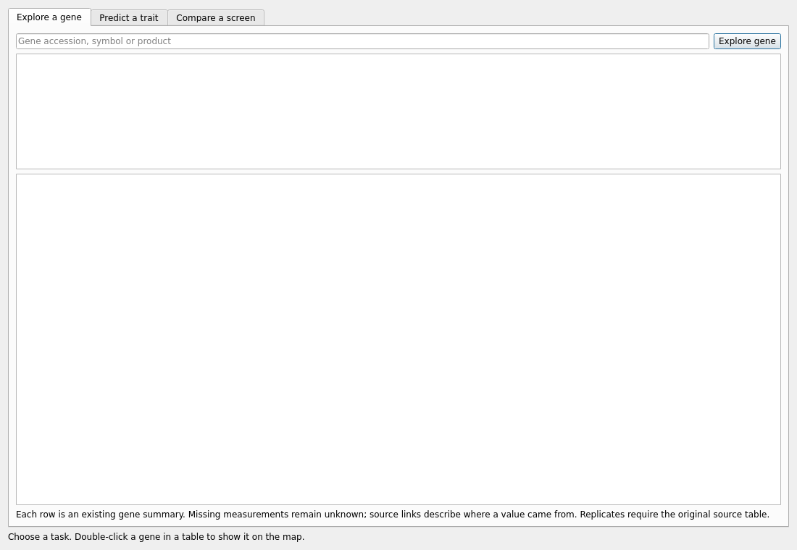
Predict a trait
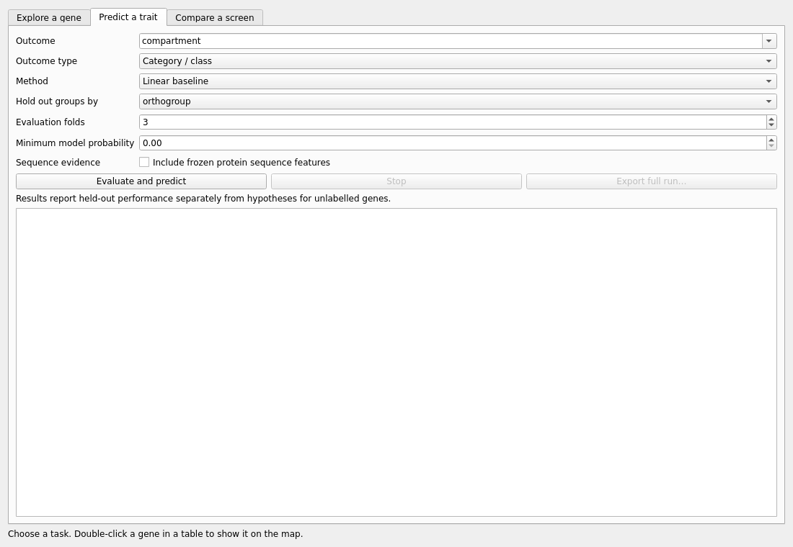
Compare a screen
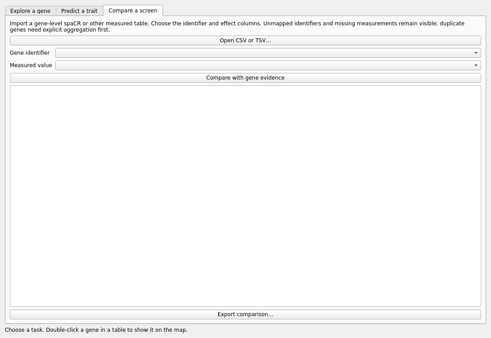
7. Your own data
File > Import data… reads CSV, TSV, Excel or parquet, suggests the identifier column (and a repair if its identifiers are malformed), resolves identifiers through the identity layer -- old accessions, other strains, symbols -- and offers the preprocessing rather than assuming it. Imported columns are prefixed and joined in memory; the shipped cache is never written. Imported columns then appear in the Data tab as their own block and in every strategy.
File > Save all analysis results… writes every tab's table into one file; Load analysis results… puts them back, and a loaded row is as clickable as a computed one. A file whose kind does not match its tab is refused.
8. The Strategies tab
Thirty-two named ways of turning the combined data into a claim, grouped by how they work:
- Search the map space: 01 hold out a category and search for a map that finds it, 02 find the map where your gene list is one cluster, 03 ask which categories the data can rediscover, 04 keep only the modules that survive the whole walk, 05 tune a map without labels, then read what it encodes, 06 find which kind of evidence carries a label
- Borrow from neighbours: 07 call a gene by the genes that behave like it, 08 call a gene by its neighbours on the map, 09 name a cluster by the label it is enriched for, 10 find genes whose label their neighbours contradict
- Walk the networks: 11 diffuse a label across one measured network, 12 let every network vote, weighted by what it has earned, 13 place a protein by the proteins it physically touches, 14 annotate function through shared fold, 15 find the communities several networks agree on, 16 predict the contacts an interactome missed, 17 read the literature for biology, not fame, 18 list what the data says and the literature has not written
- Learn from examples: 19 train a classifier on the known genes and call the rest, 20 learn what makes your list special, from positives alone, 21 predict a measurement, and find the genes that defy the prediction, 22 fill in what was never measured, and say where that is honest, 23 find what matters more in one condition, and why
- Start from a gene list: 24 describe what your gene list has in common, 25 grow your gene list along the networks
- Contrast and combine layers: 26 find categories that split in two on another measurement, 27 find kinds of gene defined by two labels at once, 28 find paralogs that changed jobs
- Cross species and strata: 29 carry what one parasite shows to the other, 30 test inference on the genes orthology cannot reach
- Combine strategies: 31 call a gene only when independent strategies agree, 32 put the understudied genes first, 33 put every layer into one space and read a gene's neighbourhood, 34 train on the networks and rank the edges they are missing
Select one and read its Guide (what it infers, why that works, how it fails, a walkthrough, and how it is tested); set its Settings; press Test (hold-out) before Run. The column beside each name is the verdict its self-test earned on the shipped data, and the calibration tables say which settings and targets it works for. Gene-list strategies accept a pasted list, a file, an example set, or the genes gated on the map.
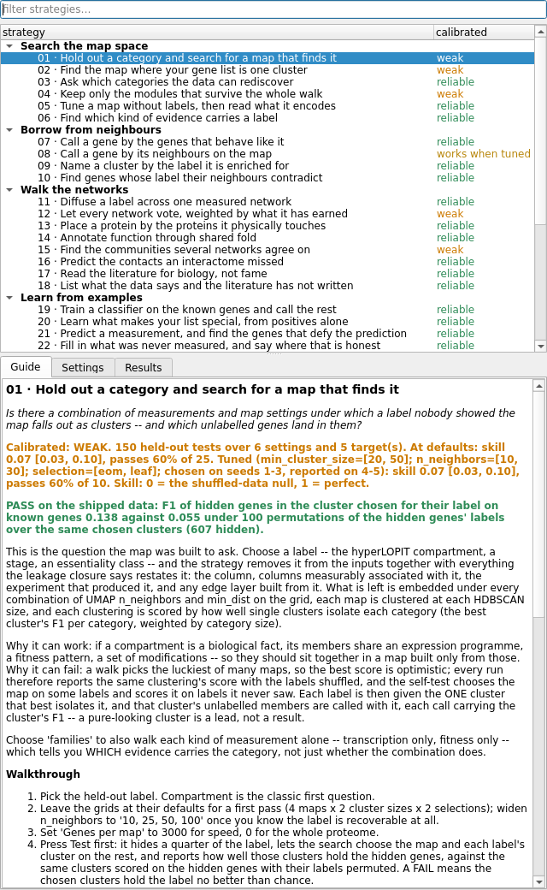
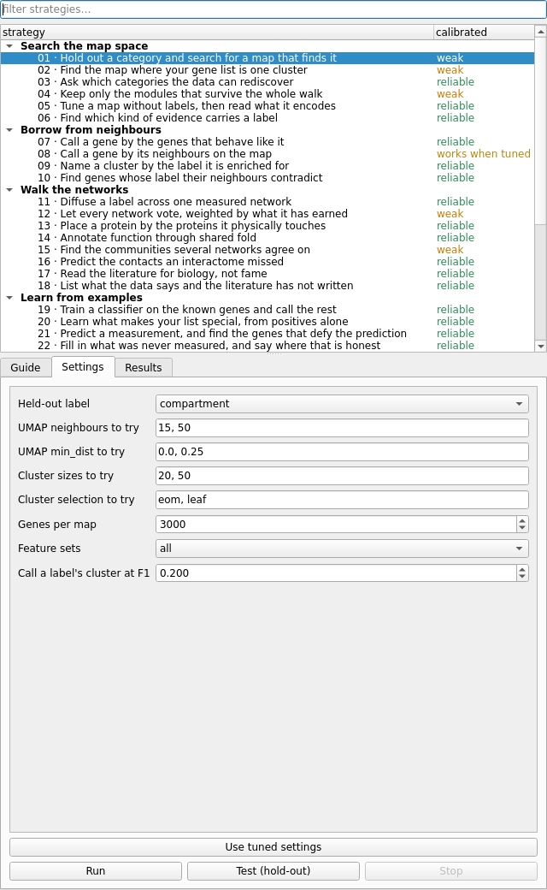
Every strategy removes the held-out label, anything that restates it, the experiment that produced it, the same quantity measured another way, and any edge layer built from any of those, before it looks at anything else.
9. Two organisms
File > Species switches between T. gondii and P. falciparum. Each has its own table -- one species per window, never a union, because the identifiers and the data behind them do not align. Orthology is a bridge, not a merge: strategy 29 carries a measurement from one parasite's orthologs to the other and says how well it transfers.
10. Preferences, console, jobs and the assistant
File > Preferences holds appearance (theme, color maps, point rendering, lighting), display and window settings, and the compute backend: with the CUDA stack installed, UMAP and HDBSCAN run on the GPU, and every run records which library built it. The jobs panel lists everything running in the background, with Stop and the traceback of anything that failed; the console shows the log; the assistant answers questions about the map.
11. The Python API
from starplast import strategies as S
S.overview() # every strategy, one row each
S.get('geneset_hunt') # its guide (renders in notebooks)
S.get('geneset_hunt').parameters() # settings and why they exist
test = S.test('geneset_hunt', genes=my_list) # hide 30% of the list, recover it
result = S.run('geneset_hunt', genes=my_list) # run on the shipped T. gondii table
result.tables['candidates'] # what it found
result.plot(S.shipped('Tg')) # the map it was computed on
result.save('out/') # every table as CSV
ctx = S.shipped('Pf') # the P. falciparum table
ctx.banned('stage_enriched_derived') # what a held-out analysis never sees
The lower-level modules -- search, validate, prediction, methods, discovery, leakage -- are documented in the API reference; the notebook tutorials use exactly the calls above.
12. Reading the numbers honestly
Three habits keep the output of this program from becoming a source of false claims. Look at the chance level: every search and every self-test reports the same procedure on shuffled data; a number is only as good as its gap over that. Distrust the best of many: a walk picks the luckiest of many maps, which is why the self-tests choose on some labels and score on others, and why a gene-list result reports a search-corrected p-value. Trust the stratum, not the average: a strategy's accuracy over the whole proteome is dominated by well-studied, conserved genes; strategies 30 and 32 measure it where inference is needed most.